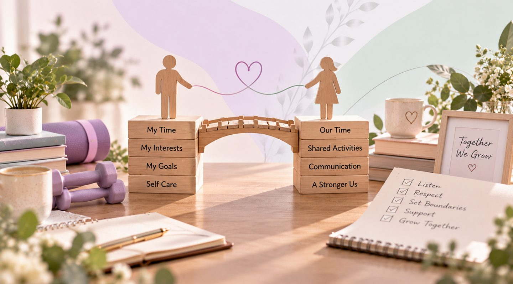
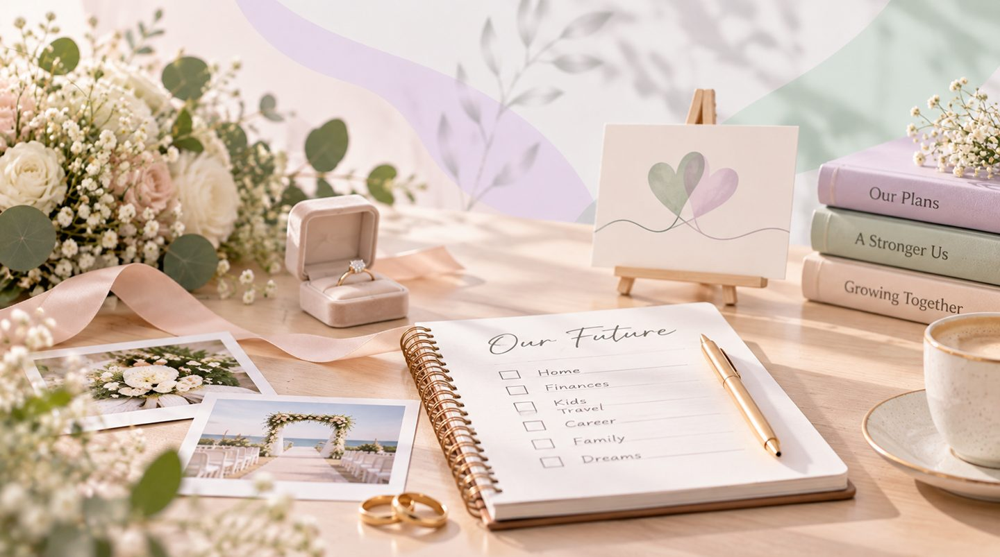
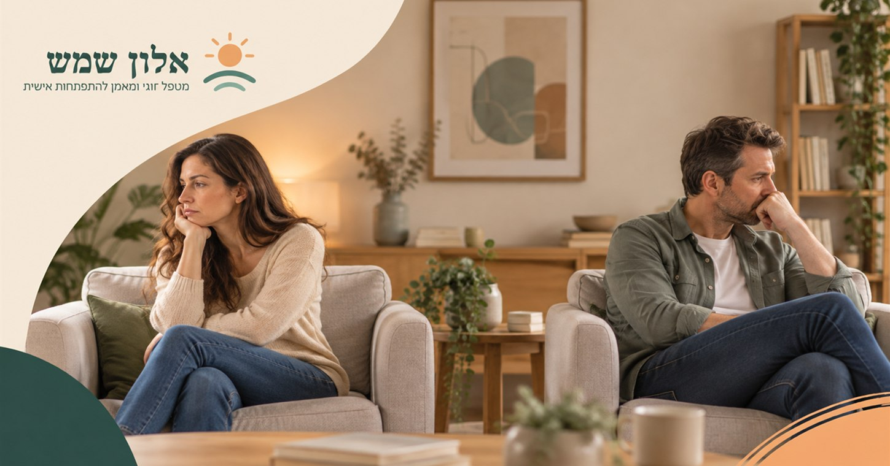
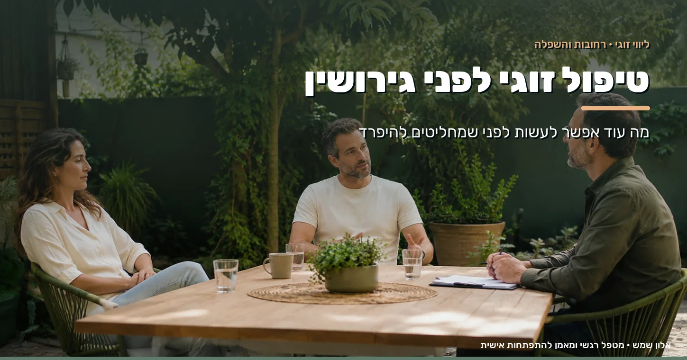

What I encounter in the room, written down. About relationships, about teens and about the moments when something gets stuck. No slogans, and no promises that can't be kept.

Couples Therapy When one partner changes: how does personal growth affect the relationship? What happens when one partner grows and changes? How personal growth affects the relationship, and how to set boundaries without losing closeness. Read more. Read →
Couples Therapy Before you say yes: what young couples need to learn to talk about before the wedding Getting married soon? What to talk about before the wedding, how to handle gaps in your relationship, and how couples guidance can help build a stable bond. Read more. Read → Couples Therapy I'm talking and you're not listening: why is it in our relationships that we feel most misunderstood? A conversation that starts with a wish to share turns into an argument, and you both feel misunderstood. Why it happens especially in relationships, and how connecting communication changes it. Read more. Read → Personal Coaching When every decision might disappoint someone: how do we learn to choose ourselves too? Afraid to choose because someone might be disappointed? 4 signs you decide for others, and how to choose yourself too. Read more. Read → Personal Coaching Life looks good from the outside, so why does something inside still feel missing? You have a job, a family and a routine, and still something is missing. 4 signs it's time to listen to yourself and begin a process of empowerment. Read more. Read → Personal Coaching Self-sabotage: why we stop ourselves just as things start to work out Just as everything starts falling into place, something inside blows it up. Why the pattern keeps coming back and how to break free of it. Read more. Read → Personal Coaching Everything is fine, but nothing moves: on the quiet kind of stuck that comes without a crisis No crisis and no drama, just a feeling that life is standing still. On the quiet kind of stuck and how to start moving. Read more. Read → Personal Coaching Night anxiety: why the thoughts get louder just when everything is quiet The moment your head hits the pillow, the thoughts begin. Why anxiety gets worse at night and how to bring back calm. Read more. Read → Couples Therapy Why am I always drawn to people who aren't right for me? 5 patterns worth knowing Another relationship that began with excitement and ended in disappointment? 5 patterns that draw us to the wrong people, and how to change them. Read more. Read →
Couples Therapy Check yourselves: does your relationship crisis call for couples therapy? Arguments have become routine and you're no longer sure it will pass. 8 questions to help you assess the state of your relationship. Take the check. Read → Couples Therapy What can you do when only one partner wants couples therapy? You suggested going together and the answer was no. What you can still do when only one of you is ready to start. Find out more Read → Personal Coaching The limiting beliefs that stop good employees from moving forward The most talented person on the team didn't apply for the role, and it isn't skills they lack. What is really holding them back? Find out more Read → Workshops & Talks Loving is easy. Keeping love alive - nobody ever taught us that In love but drifting apart? The fight beneath the fight, the love languages and small steps that bring closeness back. Read the full guide. Read →
Couples Therapy Couples therapy before divorce: what else can be done The word divorce has already been said at home and you're not sure you meant it. What else is worth exploring before you decide. Read more. Read →The first step is yours to take - everything after that we do together. A personal intro call, with no commitment.
Before you go - have you heard about the December 1 seminar?
Alon will get back to you soon to confirm your place and share payment details. If it's urgent, you can also WhatsApp 054-3333265.